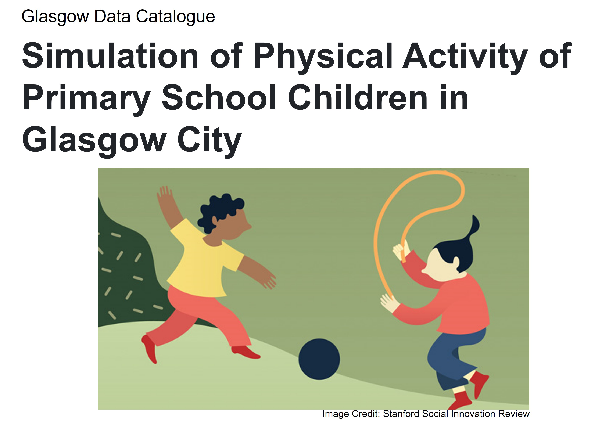

About
This Catalogue offers a handful of geospatial data used for the Simulation of Physical Activity of Primary School Children in Glasgow City project. It includes the city’s boundary, population, environments, buildings, and so on. Feel free to browse through this book, and drop me a note if you have any enquiries.

Hyesop Shin <Research Associate at the MRC/CSO Social And Public Health Sciences Unit, University of Glasgow
Bio here
Structure
directory/
├── index.Rmd
├── 01-intro.Rmd
├── 02-sptial-boundary.Rmd
├── 03-population.Rmd
├── 04-school.Rmd
├── 05-buildings.Rmd
├── 06-land-use.Rmd
├── 07-demographics.Rmd
├── 08-health.Rmd
├── _bookdown.yml
├── _output.yml
├── reference.bib
├── preamble.tex
├── GlasgowGIS
├── images
├── README.md
└── style.css